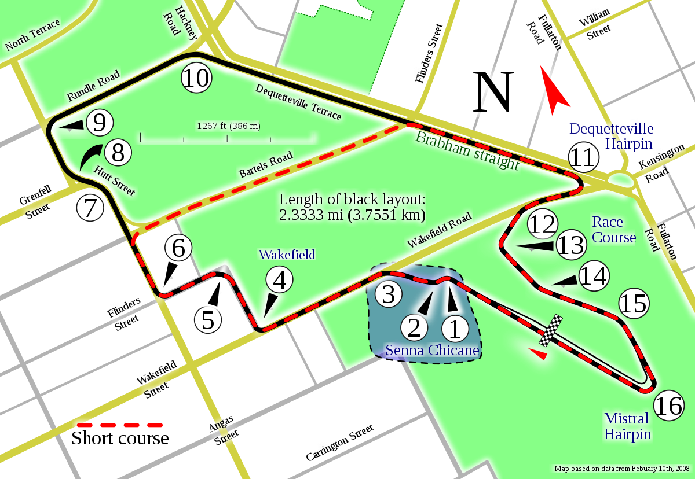
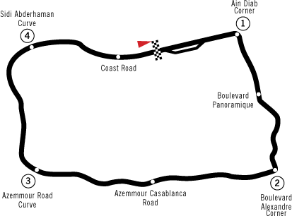

Adelaide street Circuit
The Adelaide Street Circuit (also known as the Adelaide Parklands Circuit) is a temporary street circuit in the East Parklands adjacent to the Adelaide central business district in South Australia, Australia.
The 3.780-kilometre (2.349 mi) "Grand Prix" version of the track hosted eleven Formula One Australian Grand Prix events from 1985 to 1995, as well as an American Le Mans Series endurance race on New Year's Eve in 2000 (Race of a Thousand Years). Between 1999 and 2020, a shortened version of the circuit was used for the Adelaide 500 touring car race. A sprint version of the circuit was used after 2014.
Ain-Diab Circuit
The Ain-Diab Circuit was a Formula One road circuit built in 1957, southwest of Ain-Diab in Morocco, using the existing coast road and the main road from Casablanca to Azemmour that ran through the Sidi Abderhaman forest. Prior to 1957, the Anfa Circuit and the Agadir circuit were used for the Moroccan Grand Prix.
The 7.603 km course was designed by the Royal Automobile Club of Morocco and given a full blessing from Sultan Mohammed V. It took six weeks to construct. The site hosted a non-championship F1 race in 1957. On 19 October 1958 the course was the venue for the 1958 Moroccan Grand Prix,[2][4] the final round in the 1958 Formula One season.[5] It was won by Stirling Moss driving a Vanwall, completing the 53 laps in 2h 09m 15.1s. Mike Hawthorn driving a Ferrari 246 finished second and in doing so became the first British Formula One World Champion.
During the race, the engine on the Vanwall of Stuart Lewis-Evans seized and the car spun and crashed. He was fatally burned,[1][2] dying in hospital in England eight days later.[7]